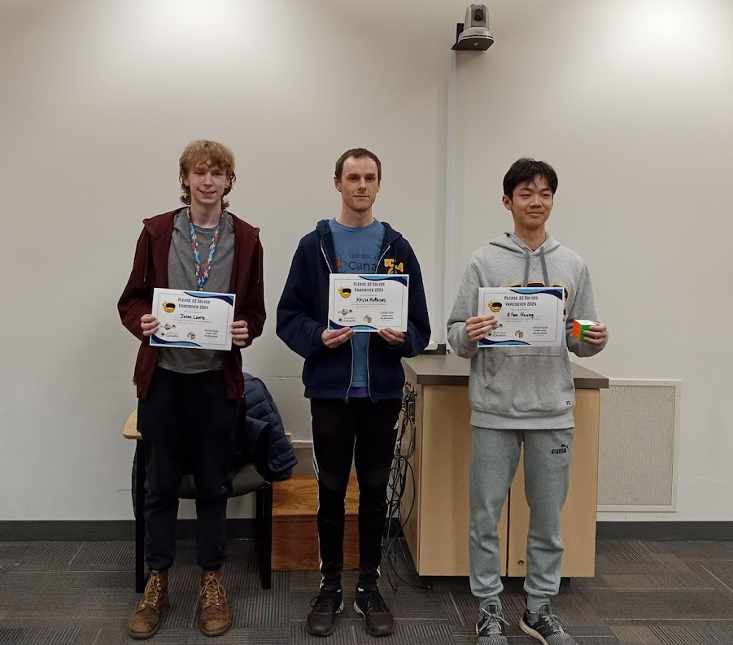

Athletics
I played competitive badminton since grade 7 and I still play for fun. I also enjoy biking and running (10km PR: 47:03 achieved at the Vancouver Sun Run 2026).
Speed Typing
I enjoy speed typing. I am currently ranked in the top 0.7% on Monkey Type. My average typing speed for everyday typing (e.g. texting, writing an essay) is 140-150 WPM. Here is my MonkeyType Profile.
Playing Piano
Like many other children, I was forced to learn piano by parents. I still play for fun and I practice ~2 hours per week. Enjoy some of my recordings.

Speed Cubing
I also enjoy solving Rubik's Cubes (blindfolded). My favourite event is 3x3 blindfolded, but I also practice 3x3, 4x4, 5x5 as well. For 3x3 blindfolded, I currently use 3-style, which is the most advanced method. I am ranked 10th in Canada for 3x3 blindfolded. I attended 10+ official competitions so far. Here is my WCA profile.